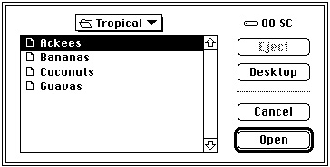

Legacy Document
Important: The information in this document is obsolete and should not be used for new development.
Important: The information in this document is obsolete and should not be used for new development.


Opening a File
Your application might need to open a file in several different situations. For example, if the user launches your application by double-clicking one of its document icons in the Finder, the Finder provides your application with information about the selected file (if your application receives high-level events, the Finder sends it an Open Documents event). At that point, you want to create a new window for the document and read the document data from the file into the window.Your application also opens files after the user chooses the Open command in the File menu. In this case, you need to determine which file to open. You can use the Standard File Package to present a standard dialog box that allows the user to navigate the file system hierarchy (if necessary) and select a file of the appropriate type. Once you get the necessary information from the Standard File Package, you can then create a new window for the document and read the document data from the file into the window.
As you can see, it makes sense to divide the process of opening a document into several different routines. You can have a routine that elicits a file selection from the user and another routine that creates a window and reads the file data into it. In the sample listings given here, the function
DoOpenCmdhandles the interaction with the user andDoOpenFilereads a file into a new window.Listing 1-6 shows one way to handle the Open command in the File menu. It uses the Standard File Package routine
StandardGetFileto determine which file the user wants to open.Listing 1-6 Handling the Open menu command
FUNCTION DoOpenCmd: OSErr; VAR myReply: StandardFileReply; {Standard File reply record} myTypes: SFTypeList; {types of files to display} myErr: OSErr; BEGIN myErr := noErr; myTypes[0] := 'TEXT'; {display text files only} StandardGetFile(NIL, 1, myTypes, myReply); IF myReply.sfGood THEN myErr := DoOpenFile(myReply.sfFile) ELSE myErr := usrCanceledErr; DoOpenCmd := myErr; END;TheStandardGetFileprocedure requires a list of file types to display in an Open dialog box, as in Figure 1-7. In this case, only text files are to be listed.Figure 1-7 The default Open dialog box

The user can scroll through the list of files in the current directory, change the current directory, select a file to open, or cancel the operation altogether. When the user clicks either the Cancel or the Open button,
StandardGetFilefills out the Standard File reply record you pass to it, which has this structure:
TYPE StandardFileReply = RECORD sfGood: Boolean; {TRUE if user did not cancel} sfReplacing: Boolean; {TRUE if replacing file with same name} sfType: OSType; {file type} sfFile: FSSpec; {selected item} sfScript: ScriptCode; {script of selected item's name} sfFlags: Integer; {Finder flags of selected item} sfIsFolder: Boolean; {selected item is a folder} sfIsVolume: Boolean; {selected item is a volume} sfReserved1: LongInt; {reserved} sfReserved2: Integer; {reserved} END;In this situation, the relevant fields of the reply record are thesfGoodandsfFilefields. If the user selects a file to open, thesfGoodfield is set toTRUEand thesfFilefield contains anFSSpecrecord for the selected file. In Listing 1-6, the returnedFSSpecrecord is passed directly to the application-defined functionDoOpenFile. Listing 1-7 illustrates a way to define theDoOpenFilefunction.
FUNCTION DoOpenFile (mySpec: FSSpec): OSErr; VAR myWindow: WindowPtr; {window for file data} myData: MyDocRecHnd; {handle to window data} myFileRefNum: Integer; {file reference number} myErr: OSErr; BEGIN {Create a new window, but don't show it yet.} myErr := DoNewDocWindow(FALSE, myWindow); IF (myErr <> noErr) OR (myWindow = NIL) THEN BEGIN DoOpenFile := myErr; Exit(DoOpenFile); END; SetWTitle(myWindow, mySpec.name); {set window's title} MySetWindowPosition(myWindow); {set window position} {Open the file's data fork for reading and writing.} myErr := FSpOpenDF(mySpec, fsRdWrPerm, myFileRefNum); IF myErr <> noErr THEN BEGIN DisposeWindow(myWindow); DoOpenFile := myErr; Exit(DoOpenFile); END; {Retrieve handle to window's data record.} myData := MyDocRecHnd(GetWRefCon(myWindow)); myData^^.fileRefNum := myFileRefNum;{save file information} myData^^.fileFSSpec := mySpec; myErr := DoReadFile(myWindow); {read in file data} ShowWindow(myWindow); {now show the window} DoOpenFile := myErr; END;This function is relatively simple because much of the real work is done by the two functions DoNewDocWindow andDoReadFile. TheDoReadFilefunction is responsible for actually reading the file data from the disk into the TextEdit record associated with the document window. See the next section, "Reading File Data," for a sample definition ofDoReadFile.In Listing 1-7, the key step is the call to
FSpOpenDF, which opens the data fork of the specified file. A file reference number--which indicates an access path to the open file--is returned in the third parameter. As you can see, this reference number is saved in the document record, from where it can easily be retrieved for future calls to theFSReadandFSWritefunctions.The second parameter in a call to the
FSpOpenDFfunction specifies the access mode for opening the file. For each file, the File Manager maintains access mode information that determines what type of access is available. Most applications support one of two types of access:
Your application can use the following constants to specify these types of access:
- A single user is allowed to read from and write to a file.
- Multiple users are allowed to read from a file, but no one can write to it.
CONST fsCurPerm = 0; {whatever permission is allowed} fsRdPerm = 1; {read permission} fsWrPerm = 2; {write permission} fsRdWrPerm = 3; {exclusive read/write permission} fsRdWrShPerm = 4; {shared read/write permission}To open a file with exclusive read/write access, you can specifyfsRdWrPerm. To open a file with read-only access, specifyfsRdPerm. If you want to open a file and don't know or care which type of access is available, specifyfsCurPerm. When you specifyfsCurPerm, if no access paths are already open, the file is opened with exclusive read/write access. If other access paths are already open, but they are read-only, another read-only path is opened.